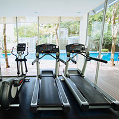
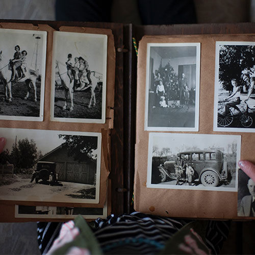

Whatever your reason for coming to the temple, we have your needs covered. Here at Temple Inn and Suites we offer:
Free Amenities

Free Gym

Free Parking

Free Wifi

Indoor Pool

Temple Shuttle
We also have specific services depending on why you are here to visit the temple:
A Family Wedding
Are you coming to the temple for a wedding?
Just for you, we offer a wedding reception hall that can be easily customized with a simple catering menu and kitchen access for food preparation and serving. There is so much to plan with a wedding and we want to eliminate the hard work so you can focus on what really matters. We also have a special suite for newly weds as they prepare for their reception and for any other needs that they might have. This room includes everything our hotel has to offer as well as special snacks and a beautiful vanity for the bride.
Family History Work

Are you coming to serve your ancestors in the temple?
For you, we offer a family history room with computers, printers, and access to the internet. We also offer specialized help by our trained staff who are available upon request (no prior reservations required) to answer any family history or Family Search questions that you might have. We love to see our visitors find family members right here at the hotel who are then able to take these names straight to the temple for their work to be completed. It is such a special occasion.
Families Visiting the Temple
Are you a family coming to visit the temple with kids who are too young to go inside?
We know that there are so many young families who are not able to come to the temple very often because they do not have a place to stay as well as childcare for their kids. Here at Temple Inn and Suites, we offer low-cost child care services, so that your kids can stay right here as you hop over to go to the temple. This is one of the greatest blessings here, and we see it in the eyes of parents who haven't been able to go to the temple as a couple for many years. We really want to make this service available for every parent and family, so we keep the cost low so you aren't financially burdened by child care.
Cost:
- 1-3 children all under 8 years-old: $20
- 1-3 children with at least one over 9 years-old: $15
- 4-6 children all under 8 years-old: $30
- 4-6 children with at least one over 9 years-old: $25
*We can care for up to 30 children at a time, so if you are coming for a wedding and have a larger group, be sure to call ahead and see what our group prices are.
Missionaries and Long-term Temple Patrons
Are you going to be staying at the temple for more than a week?
We know that when it comes to missionary services, it is so important for you to find a comfortable, affordable place to stay whether you are here for 6 months, 18 months, or 3 years. Please contact us for special pricing on our long-term stay accommodations in kitchenette suites for full-time temple missionaries.